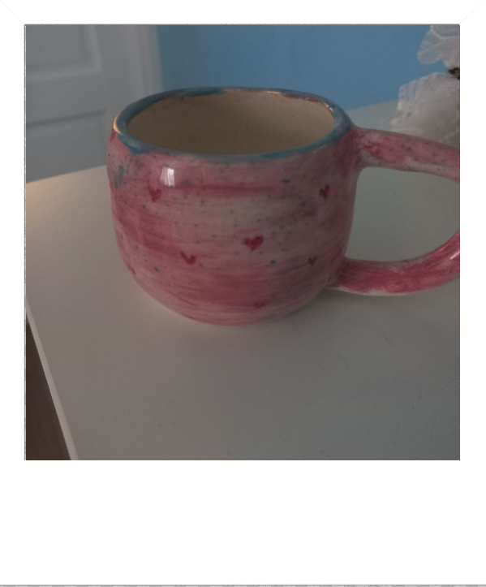
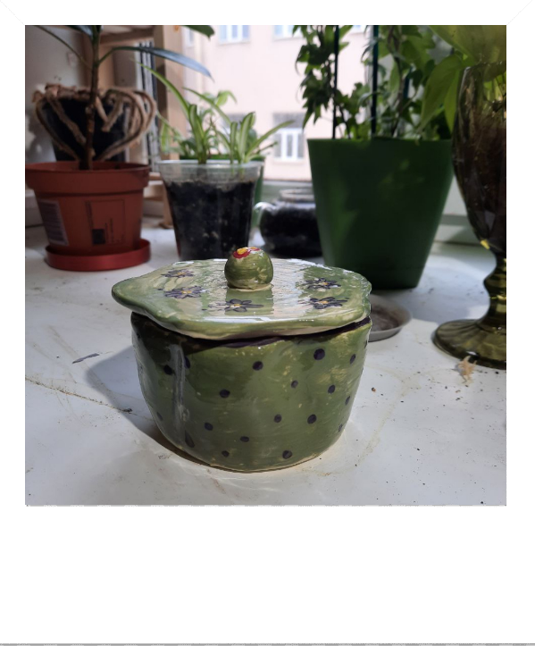
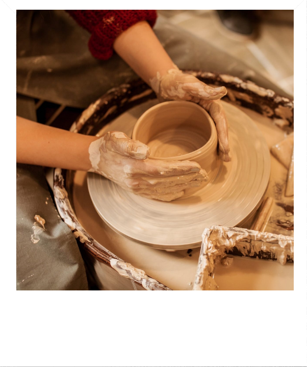
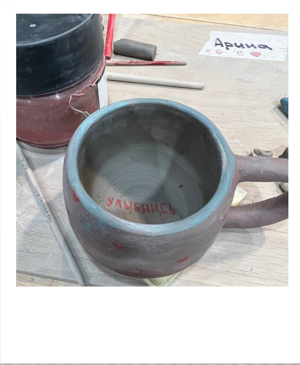

Лепка - это классное занятие, которое может привнести радость и творчество в жизнь любого человека. Вот несколько причин, почему лепку стоит попробовать:
1
Творческое самовыражение: Лепка позволяет нам выразить свои мысли, чувства и фантазии через трехмерные формы. Можно создавать любые предметы, которые придумаете, будь то реалистичные скульптуры или абстрактные работы искусства.

2
Релаксация и стресс-релиф: Работа с глиной уравновешивает ум и тело, помогает снять напряжение и стресс. Когда мы сфокусированы на лепке, наш разум отключается от повседневных проблем, а сконцентрирование на тактильном опыте приносит удовлетворение и спокойствие.

3
Физическая развлечение и развитие: Лепка - это активное занятие, требующее действий с руками и пальцами. Работа с глиной улучшает моторику, координацию движений и силу рук. Кроме того, она стимулирует восприятие форм и пространственное мышление.

4
Интеллектуальное развитие: Процесс лепки требует аналитических и творческих навыков. Мы должны оценивать пропорции, форму и структуру объекта, принимать решения и находить решения для преодоления возникающих проблем. Это способствует развитию логического мышления и способности критически мыслить.

 Главная
Лепка
Велосипеды
Пикник
Главная
Лепка
Велосипеды
Пикник